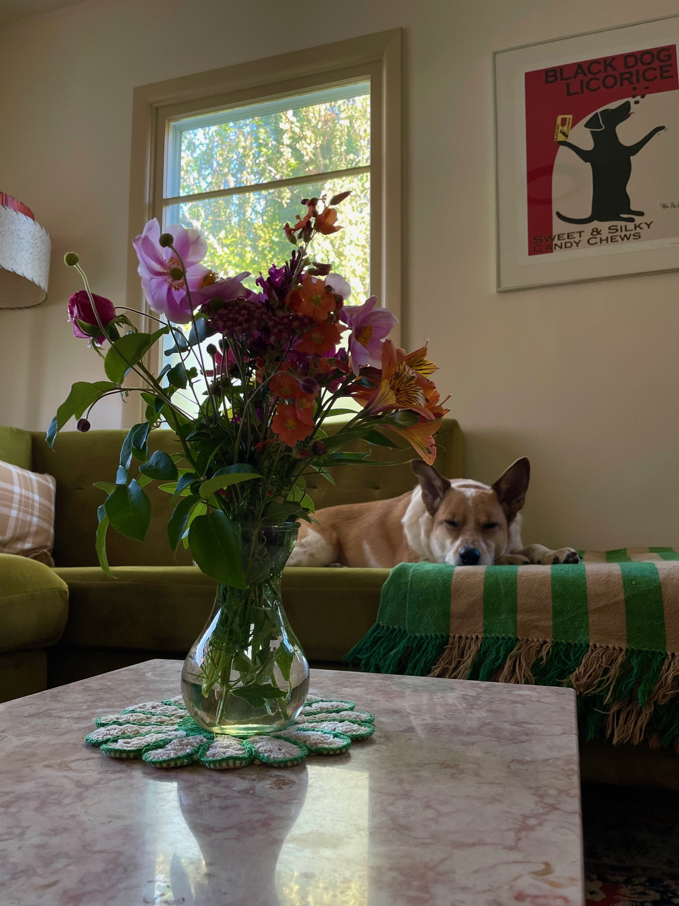

today was not my best day. it definitely was not bad! do not think it was bad! but things felt harder- more frustrating to put together. I felt so tired. I slept outside in the backyard in the sun. And I drooled a little line of drool while I slept. That felt quite good. I am in bed now. Below is a picture of some flowers cut from my garden. I have a dog. I don't think that has ever come up but I have a dog and she is in the background of the picture. The flowers are in the foreground. I started out kind of avoiding title case, but swung back around and here I am. Capitalizing actually feels pretty good. Do let me know if you have any questions or concerns. -C 